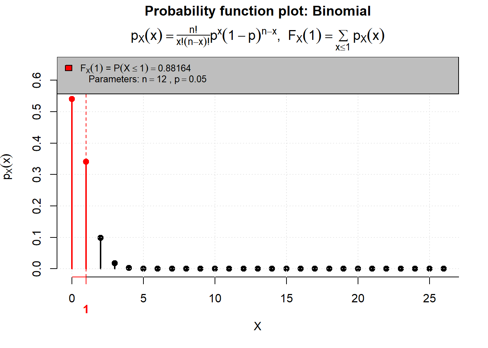
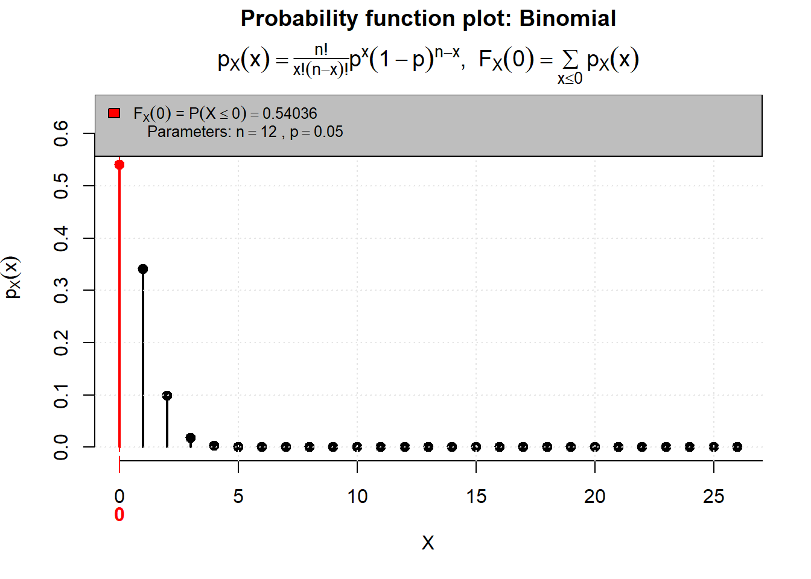
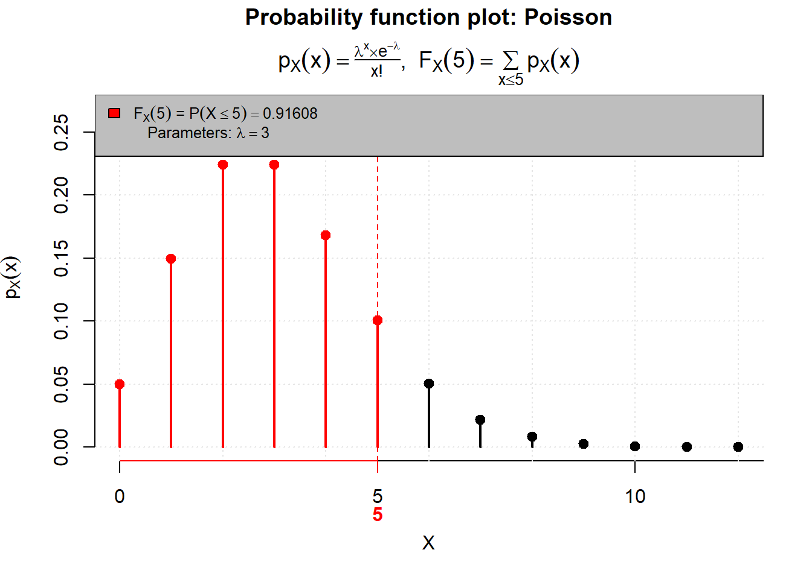
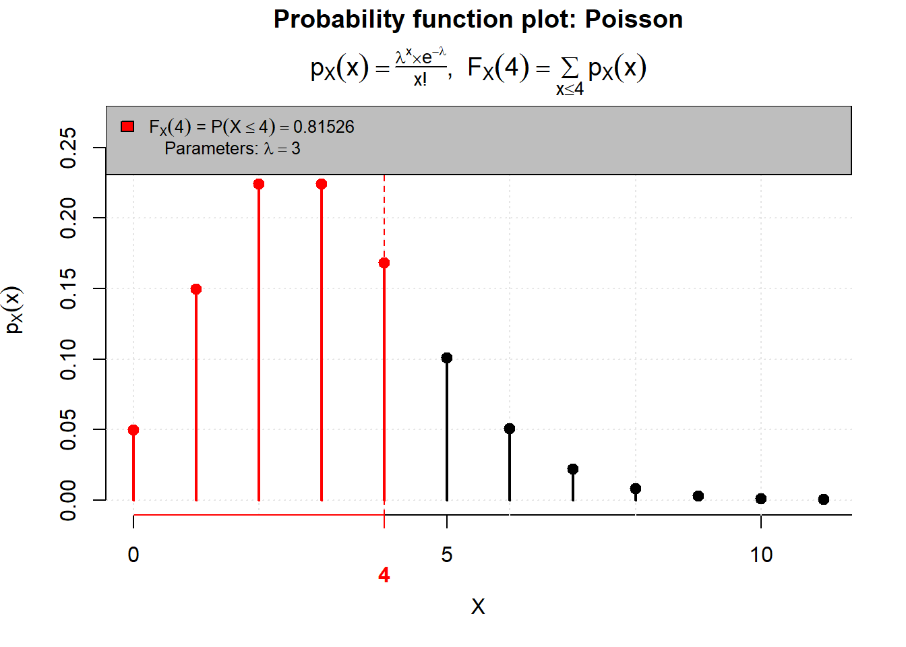
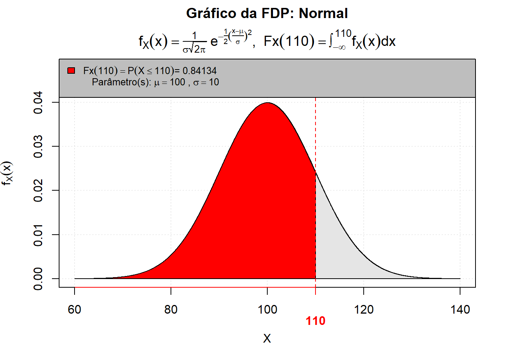
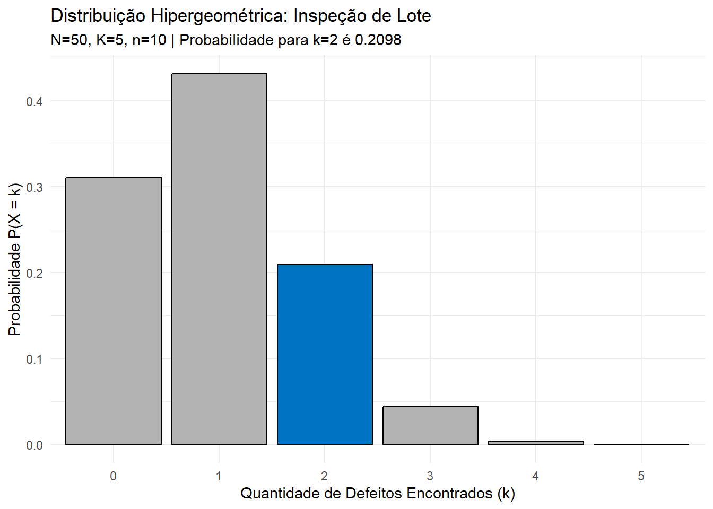
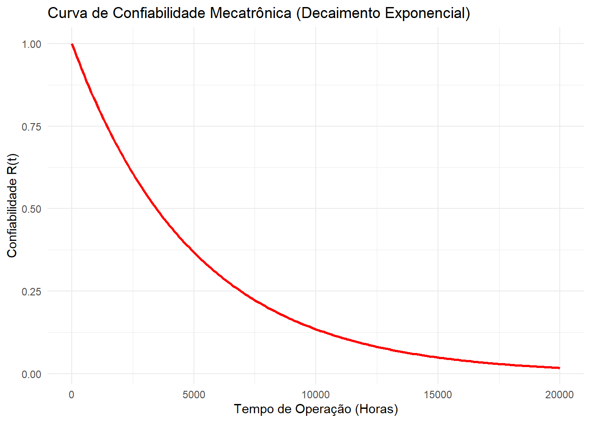

Código
library(leem)
# P(X=1)=P(X≤1)−P(X≤0)
P(q = 1,
dist = "binomial",
size = 12,
prob = 0.05,
) -
P(q = 0,
dist = "binomial",
size = 12,
prob = 0.05
)

[1] 0.34128

Estatística e Probabilidade
Prof. Ben Dêivide (DEFIM/CAP/UFSJ)
O estudo das variáveis aleatórias e suas distribuições de probabilidade constitui a base da estatística contemporânea, permitindo o estudo de fenômenos reais e a tomada de decisões fundamentada em dados. Em contextos técnicos, como a engenharia e a computação, essas são ferramentas essenciais para prever falhas em sistemas, analisar tráfego de dados e garantir a qualidade dos equipamentos.
Este relatório tem como objetivo apresentar uma análise teórica e prática das distribuições Binominal, Poisson e Normal, bem como outros modelos complementares Geométrica, Hipergeométrica, Uniforme e Exponencial. O relatório será redigido sobre duas perspectivas: a analítica, através de cálculos matemáticos manuais, e a computacional, utilizando a linguagem R com o auxílio do pacote leem, que contribui para visualização dos dados estatísticos.
As variáveis podem ser classificadas em dois tipos fundamentais:
Assumem valores contáveis e podem ser observadas em situações como:
Os valores normalmente são:
\[0,1,2,3,4,5…\]
São variáveis que podem assumir valores em um intervalo real, podem ser analisadas em casos como:
Uma altura pode ser:
\[1,54; 1,731; 1,7431 ...\] Ou seja, existem infinitos valores possíveis.
Nesta seção, será abordado algumas distribuições estudadas, apresentando suas definições, bem como suas aplicações práticas em engenharia.
A Distribuição Binomial é do tipo variável aleatória discreta, modela situações em que se é feito vários experimentos independentes e cada experimento possui apenas dois resultados possíveis (Sucesso ou Fracasso).
Fórmula : \[P(X = k) = \binom{n}{k} p^k (1-p)^{n-k}\]
A qual:
Um lote de sensores ultrassônicos ( são usados para medir distância) tem uma taxa de defeito de 5% . Se você comprar 12 sensores para montar um robô, qual a probabilidade de exatamente 1 sensor vir com defeito?
Cálculo Analítico:
Para o cálculo, utilizamos a combinação \(\binom{12}{1} = \frac{12!}{1!(12-1)!} = 12\).\[P(X = 1) = \binom{12}{1} \cdot (0,05)^1 \cdot (0,95)^{12-1}\]\[P(X = 1) = 12 \cdot 0,05 \cdot 0,5688 \approx 0,3413\]
A probabilidade de encontrar exatamente um sensor com defeito é de aproximadamente 34,13%.
Para o cálculo computacional usaremos o pacote leem. Necessitamos conhecer algumas funções que serão usadas no código:
library(leem)
# P(X=1)=P(X≤1)−P(X≤0)
P(q = 1,
dist = "binomial",
size = 12,
prob = 0.05,
) -
P(q = 0,
dist = "binomial",
size = 12,
prob = 0.05
)

[1] 0.34128A Distribuição de Poisson é do tipo variável aleatória discreta,modela a quantidade de vezes que um evento ocorre em um intervalo de tempo, local ou região que está sendo analisado, com taxa média λ.
Fórmula: \[P(X = k) = \frac{e^{-\lambda} \cdot \lambda^k}{k!}\]
Onde:
Usada para casos como:
Um servidor recebe em média 3 requisições por minuto. Qual a probabilidade de receber exatamente 5 requisições em um minuto ?
Onde:
Cálculo Analítico: \[P(X = 5) = \frac{e^{-3} \cdot 3^5}{5!}\]\[P(X = 5) \approx \frac{0,0498 \cdot 243}{120} \approx 0,1008\]
A probabilidade de receber 5 requisições em um minuto é de aproximadamente 10,08%.
Funções que usaremos no código:
library(leem)
# P(X=5)=P(X≤5)−P(X≤4)
P(
q = 5,
dist = "poisson",
lambda = 3,
) -
P(
q = 4,
dist = "poisson",
lambda = 3
)

[1] 0.10082A distribuição normal é do tipo variável aleatória contínua, usada para modelar fenômenos que tendem a se concentrar em torno de um valor médio, é definida por média μ e por desvio padrão σ.
Fórmula: \[f(x)=\frac{1}{\sigma\sqrt{2\pi}}e^{-\frac{(x-\mu)^2}{2\sigma^2}}\]
Padronização \[Z=\frac{x-\mu}{\sigma}\]
Onde:
Usada bastante em:
Tempo de reposta de um microcontrolador:
Qual a probabilidade de resposta menor que 110ms?
Cálculo Analítico: \[Z=\frac{110-100}{10}\]
\[Z=\frac{10}{10}=1\]
Agora buscamos na tabela da Distribuição Normal Padrão:
\[P(Z<1)\approx0,8413\]
Para obter esse resultado, é necessário realizar a análise da tabela da Distribuição normal.
Como desejamos calcular \(P(Z<1)\), utilizamos a propriedade complementar : \[P(Z<1)=1-P(Z>1)\]

Através da tabela da Distribuição Normal, identificamos que \(P(Z > 1)\approx0,1587\). Assim:
\[ 1-0,1587=0,8413 \]
Portanto, a probabilidade do microcontrolador apresentar um tempo de resposta menor do que 110ms é de aproximadamente 84,13%.
funções que são usadas no código:
library(leem)
P(
q = 110,
dist = "normal",
mean = 100,
sd = 10
)
[1] 0.84134A Distribuição de Geométrica é do tipo variável aleatória discreta, tem suas raízes nos trabalhos de Jacob Bernoulli (século XVII) sobre o que hoje chamamos de “Ensaios de Bernoulli” — experimentos que resultam em apenas dois resultados possíveis: “sucesso” ou “fracasso”.Enquanto a Distribuição Binomial (também derivada desses ensaios) foi criada para responder “quantos sucessos ocorrem em \(n\) tentativas?”, os engenheiros e matemáticos precisavam de uma ferramenta para responder a uma pergunta fundamental de confiabilidade e tempo de espera: “Quantas tentativas independentes são necessárias até que o primeiro sucesso ocorra?”Na engenharia moderna, ela surgiu como a ferramenta definitiva para modelar processos de repetição até o êxito ou falha. Se um robô tenta agarrar uma peça e falha repetidamente devido a variações de iluminação, a distribuição geométrica modela exatamente essa “espera” até o sucesso.
Fórmula: \[P(X = k) = (1 - p)^{k - 1} p\]
Métricas de Desempenho (Valor Esperado e Variância):
Para dimensionar sistemas, precisamos saber a “média” de tentativas esperadas e o quanto isso pode variar.
Valor Esperado (Média): O número médio de tentativas até o primeiro sucesso.\[E(X) = \frac{1}{p}\]
Variância: A dispersão em torno da média.\[Var(X) = \frac{1 - p}{p^2}\]
Onde:
\(X\): A variável aleatória que representa o número da tentativa em que o primeiro sucesso ocorre (\(X \in \{1, 2, 3, \dots\}\)). \(p\): A probabilidade de sucesso em uma única tentativa (\(0 < p \le 1\)). \(1 - p\): A probabilidade de falha em uma única tentativa (frequentemente denotada como \(q\)). \(k\): Um valor específico (número inteiro) de tentativas que estamos avaliando.
Sistemas mecatrônicos são compostos por integrações de software, eletrônica e mecânica. A Distribuição Geométrica é crucial para avaliar a resiliência e a confiabilidade dessas integrações:
Redes de Comunicação Industrial (IoT): Em ambientes ruidosos (chão de fábrica com alta interferência eletromagnética), pacotes de dados de sensores frequentemente falham. A distribuição modela quantas vezes o sistema precisa reenviar o pacote até que o CLP (Controlador Lógico Programável) o receba com sucesso.
Controle de Qualidade (Visão Computacional): Um algoritmo de inspeção óptica tenta classificar uma peça com uma taxa de acerto \(p\). O modelo ajuda a definir o limite máximo de retentativas antes de descartar a peça.
Engenharia de Confiabilidade (Fadiga): Usada para modelar a vida útil de componentes discretos, como o número de ciclos que uma válvula solenoide pneumática executa antes de apresentar o primeiro vazamento.4.
Cenário: Um AGV (Robô Móvel) navega por um armazém logístico. Para se acoplar à sua estação de recarga, ele utiliza um sistema de escaneamento a laser (LiDAR). Devido a poeira e reflexos no ambiente industrial, a probabilidade de o algoritmo do robô reconhecer a estação perfeitamente em um único escaneamento é de 30% (\(p = 0.3\)). Cada escaneamento falho força o robô a se reposicionar e tentar novamente.
Queremos encontrar \(P(X = 4)\) onde \(p = 0.3\). As 3 primeiras tentativas falham: probabilidade de \(1 - 0.3 = 0.7\). A 4ª tentativa é um sucesso: probabilidade de \(0.3\)
Aplicando a fórmula:\[P(X = 4) = (0.7)^{4 - 1} \cdot 0.3\]\[P(X = 4) = (0.7)^3 \cdot 0.3\]\[P(X = 4) = 0.343 \cdot 0.3\]\[P(X = 4) = 0.1029\] Existe 10.29% de chance de o robô conseguir se alinhar e acoplar exatamente na quarta tentativa. Problema 2: Quantas tentativas o robô fará em média?\[E(X) = \frac{1}{0.3} \approx 3.33\]Em média, o sistema do AGV precisará realizar entre 3 e 4 escaneamentos por ciclo de acoplamento. Se cada reposicionamento leva 2 segundos, o engenheiro mecatrônico sabe que deve adicionar cerca de 6,6 segundos ao tempo total de ciclo da máquina no cálculo de eficiência da planta.
library(ggplot2)
# Criando dados para 0 a 10 falhas
dados <- data.frame(
falhas = 0:10,
probabilidade = dgeom(0:10, prob = 0.3)
)
# Plotando
ggplot(dados, aes(x = falhas, y = probabilidade)) +
geom_bar(stat = "identity", fill = "steelblue") +
scale_x_continuous(breaks = 0:10) +
labs(title = "Distribuição Geométrica (p=0.3)",
subtitle = "Número de falhas antes do primeiro sucesso",
x = "Quantidade de Falhas",
y = "P(X = x)") +
theme_minimal()
Em vez de fornecer um comando pronto para “gráfico de barras” ou “gráfico de linhas”, ele funciona como um software de edição (tipo Photoshop ou Canva), onde você sobrepõe elementos:
A Base: Você conecta seus dados.
O Mapeamento: Você diz quem é o eixo X e o eixo Y.
A Geometria: Você escolhe a forma (pontos, barras, linhas ou áreas).
O Refinamento: Você adiciona títulos, cores e temas.
A Distribuição Hipergeométrica é do tipo variável aleatória discreta, surgiu da necessidade de modelar situações de amostragem sem reposição. Historicamente, sua formalização está ligada ao desenvolvimento da análise combinatória nos séculos XVII e XVIII.
Enquanto a Distribuição Binomial assume que o “universo” é infinito ou que o item retirado retorna ao lote, a Hipergeométrica reconhece a realidade da manufatura: se eu retiro um sensor defeituoso de uma caixa de 10, a probabilidade de encontrar outro defeituoso nos 9 restantes muda drasticamente.
Modelagem Matemática:
Para um engenheiro mecatrônico, a precisão reside nas variáveis. Definimos a probabilidade de obter exatamente \(k\) sucessos em uma amostra de tamanho \(n\), extraída de uma população total \(N\) que contém \(K\) sucessos totais.A FórmulaA função de probabilidade é dada por: \[P(X = k) = \frac{\binom{K}{k} \binom{N - K}{n - k}}{\binom{N}{n}}\]
Variáveis do Sistema:
\(N\): Tamanho total da população (ex: lote total de componentes). \(K\): Número total de sucessos na população (ex: total de itens com uma característica específica). \(n\): Tamanho da amostra retirada (ex: itens selecionados para teste). \(k\): Número de sucessos observados na amostra.
Na mecatrônica, onde trabalhamos com sistemas embarcados, robótica e linhas de montagem automatizadas, a Distribuição Hipergeométrica é vital por três motivos:
Controle de Qualidade em Lotes Pequenos: Em células de manufatura flexível (Industry 4.0), os lotes costumam ser menores. A aproximação binomial falha aqui por subestimar a variação da probabilidade.
Testes Destrutivos: Se testar um atuador significa levá-lo à falha, ele não volta para o lote. A amostragem é, por definição, sem reposição.
Confiabilidade de Sistemas: Avaliar a probabilidade de falha em sistemas redundantes (ex: um drone com 8 motores onde ele precisa de 6 para voar).
Cenário: Um lote de \(N = 50\) microcontroladores chega à bancada. Informações históricas sugerem que, em lotes desse fornecedor, geralmente existem \(K = 5\) unidades com clock instável (defeitos). Você seleciona aleatoriamente \(n = 10\) unidades para passar pelo teste funcional automático.
Pergunta: Qual a probabilidade de você encontrar exatamente \(k = 2\) unidades defeituosas na sua amostra?
Resolução: Aplicando os valores na fórmula, Combinações de defeituosos: \(\binom{5}{2} = 10\) Combinações de não-defeituosos: \(\binom{50-5}{10-2} = \binom{45}{8} = 215.553.195\) Combinações totais da amostra: \(\binom{50}{10} = 10.272.278.170\)\[P(X = 2) = \frac{10 \times 215.553.195}{10.272.278.170} \approx 0,2098\]
Conclusão: Existe aproximadamente 21% de chance de detectar exatamente dois componentes instáveis. Esse cálculo permite que o engenheiro ajuste o rigor da inspeção: se a probabilidade de não detectar nenhum defeito (\(k=0\)) for alta demais para os padrões de segurança, o tamanho da amostra \(n\) deve ser aumentado.
# --- Parâmetros do Sistema (Exemplo dos Microcontroladores) ---
N <- 50 # População total
K <- 5 # Total de defeituosos no lote
n <- 10 # Tamanho da amostra de inspeção
k_alvo <- 2 # Quantidade exata que queremos encontrar
# --- Cálculo de Probabilidade Pontual ---
# m = K (sucessos)
# n_r = N - K (fracassos)
# k = n (amostra)
prob_pontual <- dhyper(x = k_alvo, m = K, n = N - K, k = n)
cat(paste("Probabilidade de encontrar exatamente", k_alvo, "defeitos:", round(prob_pontual * 100, 2), "%\n"))Probabilidade de encontrar exatamente 2 defeitos: 20.98 %# --- Simulação de Cenários (Distribuição Completa) ---
# Vamos ver a probabilidade para 0, 1, 2, 3, 4 e 5 defeitos na amostra
x_vals <- 0:K
probabilidades <- dhyper(x = x_vals, m = K, n = N - K, k = n)
# --- Visualização Técnica ---
library(ggplot2)
dados_plot <- data.frame(Defeitos = as.factor(x_vals), Prob = probabilidades)
ggplot(dados_plot, aes(x = Defeitos, y = Prob, fill = (Defeitos == k_alvo))) +
geom_bar(stat = "identity", color = "black") +
scale_fill_manual(values = c("gray70", "#0073C2FF"), guide = "none") +
labs(title = "Distribuição Hipergeométrica: Inspeção de Lote",
subtitle = paste("N=50, K=5, n=10 | Probabilidade para k=2 é", round(prob_pontual, 4)),
x = "Quantidade de Defeitos Encontrados (k)",
y = "Probabilidade P(X = k)") +
theme_minimal()
A Distribuição Uniforme é do tipo variável aleatória contínua, surgiu da necessidade de modelar fenômenos de máxima ignorância ou equipotencialidade. No contexto científico, ela foi formalizada para descrever situações onde não temos motivos para acreditar que um valor em um intervalo ocorra com mais frequência que outro.Na engenharia, sua relevância explodiu com a necessidade de quantificar o erro de quantização em conversores analógico-digitais (ADCs) e a tolerância de componentes fabricados em série, onde o controle de qualidade garante que a peça esteja dentro de um limite \([a, b]\), mas não garante uma tendência central (como ocorre na Gaussiana).
Formulação Matemática e Variáveis Diferente de outras distribuições, a Uniforme define que a probabilidade é constante ao longo de um intervalo definido. Função Densidade de Probabilidade (PDF). A probabilidade de uma variável \(X\) assumir um valor entre os limites inferior (\(a\)) e superior (\(b\)) é dada por:
\[f(x) = \begin{cases} \frac{1}{b - a} & \text{para } a \le x \le b \\ 0 & \text{para } x < a \text{ ou } x > b \end{cases}\] Onde:
\(a\): Limite mínimo do intervalo (ex: tensão mínima de operação). \(b\): Limite máximo do intervalo (ex: tensão máxima de operação). Média (Esperança): \(E[X] = \frac{a + b}{2}\) Variância: \(Var(X) = \frac{(b - a)^2}{12}\)
-Resolução de Sensores: Se um sensor de posição tem uma resolução de 0,01 mm, o erro de leitura está distribuído uniformemente entre \(-0,005\) e \(+0,005\); -Processamento de Sinais: A modelagem do ruído de arredondamento em microcontroladores de 8, 16 ou 32 bits segue este modelo; -Simulação de Monte Carlo: É a base para gerar números aleatórios que alimentam simulações de falhas e confiabilidade de sistemas robóticos.
Imagine que você está projetando uma célula de manufatura onde um braço robótico utiliza um Atuador Linear Digital. O controlador envia um comando de posição, mas devido à folga mecânica (backlash) das engrenagens, a posição real do atuador pode variar uniformemente em um intervalo de 2 mm em torno do ponto desejado. Se o objetivo é atingir a posição de \(100 \text{ mm}\), o erro posiciona o atuador em qualquer lugar entre \(a = 99 \text{ mm}\) e \(b = 101 \text{ mm}\). Cálculos Estatísticos PDF: \(f(x) = \frac{1}{101 - 99} = 0,5\). Isso significa que a densidade de probabilidade é constante em 0,5 para qualquer ponto nesse intervalo. Incerteza Padrão (Desvio Padrão): Para calcular o erro médio quadrático que o sistema de controle deve compensar:\[\sigma = \sqrt{\frac{(101 - 99)^2}{12}} = \sqrt{\frac{4}{12}} \approx 0,577 \text{ mm}\]
# 1. Definição de Parâmetros do Sistema
posicao_desejada <- 100 # Centro (setpoint) em mm
intervalo_erro <- 2 # Folga total (backlash) em mm
a <- posicao_desejada - (intervalo_erro / 2) # Limite inferior: 99mm
b <- posicao_desejada + (intervalo_erro / 2) # Limite superior: 101mm
# 2. Simulação de Dados
set.seed(42) # Para resultados reproduzíveis
n_amostras <- 10000
posicoes_reais <- runif(n_amostras, min = a, max = b)
# 3. Cálculos Estatísticos Comparativos
media_simulada <- mean(posicoes_reais)
sd_simulado <- sd(posicoes_reais)
sd_teorico <- sqrt((b - a)^2 / 12)
# Imprimindo Relatório no Console
cat("--- Relatório de Precisão do Atuador ---\n")--- Relatório de Precisão do Atuador ---cat("Média Esperada:", (a + b) / 2, "mm | Média Simulada:", round(media_simulada, 4), "mm\n")Média Esperada: 100 mm | Média Simulada: 99.9979 mmcat("Desvio Padrão Teórico:", round(sd_teorico, 4), "mm\n")Desvio Padrão Teórico: 0.5774 mmcat("Desvio Padrão Simulado:", round(sd_simulado, 4), "mm\n")Desvio Padrão Simulado: 0.5815 mmcat("----------------------------------------\n")----------------------------------------# 4. Visualização Gráfica para Engenharia
# Dividindo a tela para dois gráficos
par(mfrow = c(1, 2))
# Gráfico 1: Histograma das Posições Reais
hist(posicoes_reais,
breaks = 30,
probability = TRUE,
main = "Distribuição de Posicionamento",
xlab = "Posição Real (mm)",
ylab = "Densidade",
col = "steelblue",
border = "white")
# Adiciona a linha da PDF teórica (f(x) = 1/(b-a) = 0.5)
abline(h = 0.5, col = "red", lwd = 3, lty = 2)
legend("topright", legend = "PDF Teórica (0.5)", col = "red", lty = 2, lwd = 2)
# Gráfico 2: Probabilidade Acumulada (CDF)
# Útil para saber: "Qual a chance do robô estar abaixo de 100.5mm?"
plot(ecdf(posicoes_reais),
main = "Probabilidade Acumulada (CDF)",
xlab = "Posição (mm)",
ylab = "F(x)",
col = "darkgreen")
grid()
A distribuição exponencial é do tipo variável aleatória contínua, tem suas raízes no início do século XX, intimamente ligada ao desenvolvimento da Teoria das Filas e dos Processos de Poisson. Ela surgiu da necessidade de modelar matematicamente o tempo de espera entre eventos que ocorrem de forma contínua e independente a uma taxa média constante. Historicamente, o engenheiro e matemático dinamarquês A.K. Erlang foi um dos pioneiros a utilizar esses conceitos para analisar o tráfego de chamadas telefônicas (um sistema clássico de “distribuição” de sinais). Na engenharia moderna, a distribuição exponencial deixou de ser apenas para telecomunicações e se tornou a espinha dorsal da Engenharia de Confiabilidade. Ela surgiu como uma ferramenta vital porque permite aos engenheiros responder a uma pergunta crítica: “Dado que um componente está funcionando agora, qual é a probabilidade de ele falhar nas próximas \(t\) horas?”
Fundamentação Matemática e Variáveis: A distribuição exponencial descreve o tempo entre eventos em um processo de Poisson. Em mecatrônica, o “evento” é tipicamente a falha de um componente. A principal característica que define a distribuição exponencial é a falta de memória (propriedade de Markov). Isso significa que a probabilidade de um componente falhar no próximo instante depende apenas do seu estado atual de funcionamento e da sua taxa de falha, não do tempo em que ele já esteve operando. (Em termos práticos: assume-se que o componente não sofre desgaste gradativo ao longo do tempo, falhando de forma aleatória). Fórmulas EssenciaisAs equações que regem este modelo utilizam a notação matemática padrão para distribuições contínuas:
Função Densidade de Probabilidade (PDF): Descreve a probabilidade relativa de a falha ocorrer em um instante exato de tempo \(t\).\[f(t) = \lambda e^{-\lambda t} \quad \text{para } t \ge 0\]
Função de Distribuição Acumulada (CDF): Probabilidade de Falha: Fornece a probabilidade do componente falhar antes de um tempo \(t\).\[F(t) = 1 - e^{-\lambda t} \quad \text{para } t \ge 0\]
Função de Confiabilidade (Sobrevivência): Fornece a probabilidade de o componente sobreviver (não falhar) até o tempo \(t\).\[R(t) = 1 - F(t) = e^{-\lambda t}\]
Variáveis e Parâmetros:
\(t\) (Tempo): A variável contínua independente (pode ser horas, ciclos, quilômetros). \(\lambda\) (Taxa de Falha): O parâmetro de taxa. Representa o número esperado de falhas por unidade de tempo (ex: \(0,001\) falhas/hora). \(MTTF\) (Mean Time To Failure): O Tempo Médio Até a Falha. É o valor esperado (a média) da distribuição. É inversamente proporcional à taxa de falha:\[\mu = MTTF = \frac{1}{\lambda}\]
Na Engenharia Mecatrônica, que funde mecânica, eletrônica e computação, lidamos com sistemas complexos onde a falha de um subcomponente pode parar uma linha de produção inteira. A distribuição exponencial é relevante por três motivos principais:
Modelagem de Eletrônicos: Componentes de estado sólido (transistores, microcontroladores, sensores ópticos) geralmente não sofrem desgaste mecânico. Suas falhas são aleatórias (devido a picos de tensão, defeitos microscópicos latentes), enquadrando-se perfeitamente no modelo exponencial de taxa de falha constante.
Manutenção Preventiva vs. Corretiva: Como a distribuição “não tem memória”, a manutenção preventiva (trocar uma placa eletrônica antes de quebrar) não faz sentido se ela segue puramente a distribuição exponencial. Isso guia gestores a focarem em redundância de sistemas em vez de substituições programadas para esses itens específicos.
Cálculo de Confiabilidade de Sistemas: Permite calcular a confiabilidade de sistemas em série ou paralelo conectando subsistemas eletrônicos e de automação.
Cenário: O desenvolvimento do painel de controle (CLP - Controlador Lógico Programável) de um braço robótico de soldagem em uma montadora automotiva.O fabricante dos relés de estado sólido utilizados no CLP garante que a taxa de falha desses componentes em operação normal é constante, com \(\lambda = 0,0002\) falhas por hora. Objetivo: O engenheiro mecatrônico precisa saber duas coisas para o manual de especificações técnicas do robô: Qual é o tempo médio até a falha (MTTF) deste relé? Qual a probabilidade de o relé funcionar perfeitamente sem falhas durante um turno intensivo de produção contínua de 1.000 horas?
Resolução: Cálculo do MTTF: \[MTTF = \frac{1}{\lambda} = \frac{1}{0,0002} = 5.000 \text{ horas}\] O tempo esperado de vida do componente é de 5.000 horas. Cálculo da Confiabilidade em 1.000 horas: Aplicamos a Função de Confiabilidade para \(t = 1000\):\[R(1000) = e^{-(0,0002 \cdot 1000)} = e^{-0,2} \approx 0,8187\]
Conclusão: Há aproximadamente 81,87% de probabilidade de o relé operar por 1.000 horas sem falhar. Com base nisso, o engenheiro pode decidir se esse nível de confiabilidade é aceitável para o processo da montadora ou se deve introduzir um segundo relé redundante em paralelo no circuito eletrônico do braço robótico para aumentar a tolerância a falhas do sistema.
library(ggplot2)
lambda <- 0.0002
tempo_analise <- 1000
prob_falha <- pexp(q = tempo_analise, rate = lambda)
print(paste("Probabilidade de falha:", round(prob_falha * 100, 2), "%"))[1] "Probabilidade de falha: 18.13 %"# Qual a confiabilidade (probabilidade de sobreviver)? R(t)
# Como R(t) = 1 - F(t), podemos usar:
confiabilidade <- 1 - pexp(q = tempo_analise, rate = lambda)
# OU usar o argumento lower.tail = FALSE (mais preciso computacionalmente)
confiabilidade <- pexp(q = tempo_analise, rate = lambda, lower.tail = FALSE)
print(paste("Confiabilidade:", round(confiabilidade * 100, 2), "%"))[1] "Confiabilidade: 81.87 %"# Simular o tempo de falha de 100 sensores (Monte Carlo)
simulacao <- rexp(n = 100, rate = lambda)
hist(simulacao, main="Simulação de Falhas em Sensores",
xlab="Tempo (Horas)", col="steelblue")
# Criando um data frame para o gráfico (0 a 20.000 horas)
tempos <- data.frame(t = seq(0, 20000, by = 100))
tempos$R_t <- exp(-lambda * tempos$t) # Calculando Confiabilidade
ggplot(tempos, aes(x = t, y = R_t)) +
geom_line(color = "red", size = 1) +
labs(title = "Curva de Confiabilidade Mecatrônica (Decaimento Exponencial)",
x = "Tempo de Operação (Horas)",
y = "Confiabilidade R(t)") +
theme_minimal()